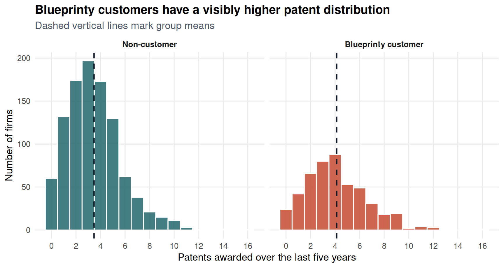
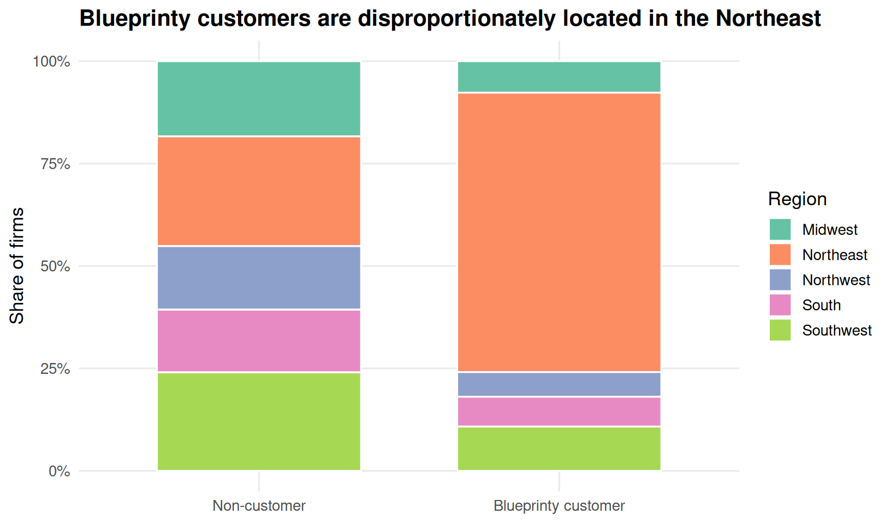
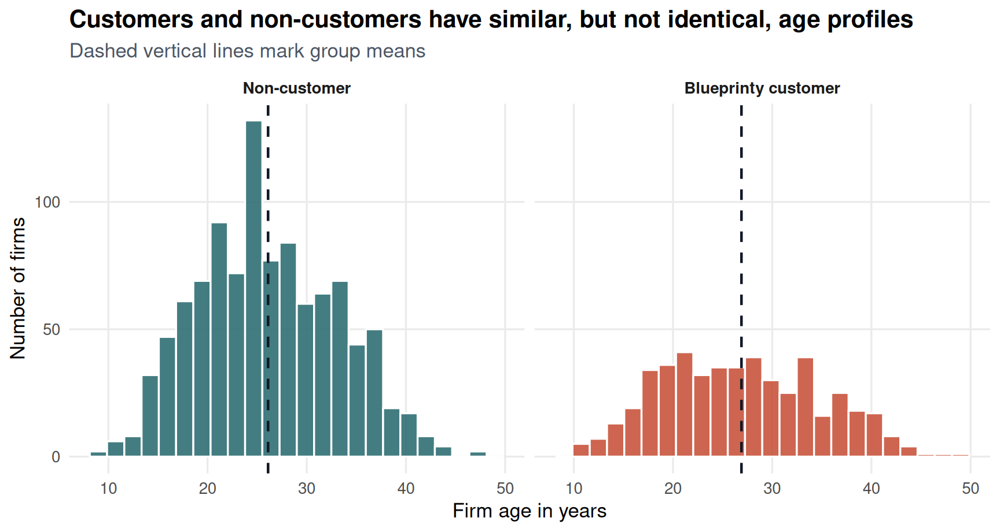
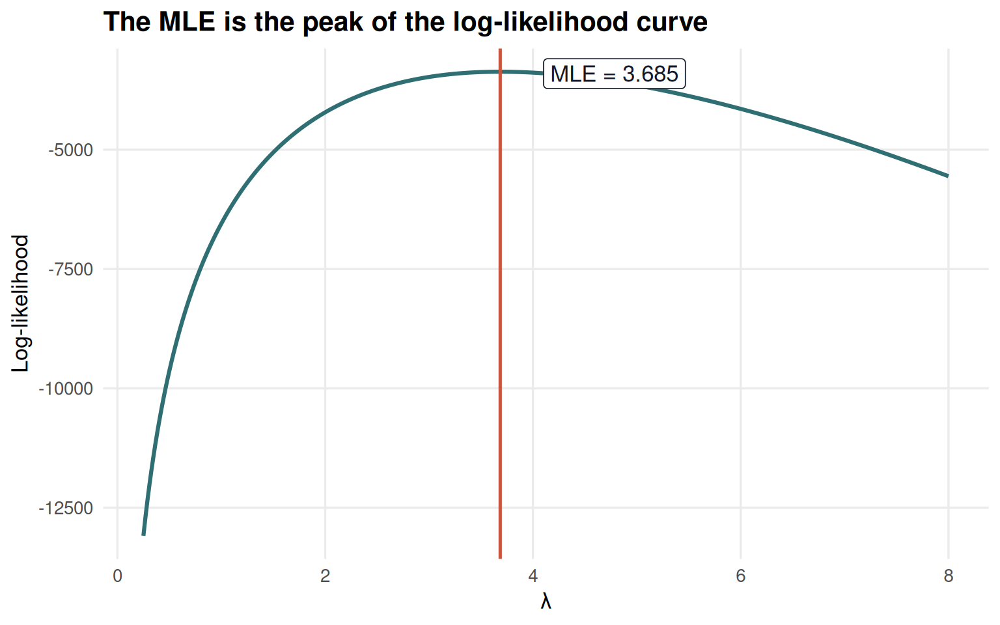

| Firm type | Number of firms | Mean patents | Median patents |
|---|---|---|---|
| Non-customer | 1019 | 3.47 | 3 |
| Blueprinty customer | 481 | 4.13 | 4 |
Poisson Regression and Maximum Likelihood Estimation
A Case Study of Blueprinty’s Software and Patent Awards
Introduction
Blueprinty is a small software company that helps engineering firms create blueprint materials for patent applications. Its marketing team would like to make a strong claim: firms that use Blueprinty’s software are more successful at getting patents awarded.
That claim sounds simple, but the evidence is not as clean as we would like. The ideal dataset would follow the same firms before and after they adopted Blueprinty’s product, or randomly assign firms to use the software. Instead, Blueprinty has collected an observational dataset on 1500 mature engineering firms. For each firm, we observe the number of patents awarded over the last five years, its region, its age since incorporation, and whether it is a Blueprinty customer.
The key challenge is selection. Blueprinty’s customers were not selected at random. If customers are older, located in regions with more patent activity, or otherwise systematically different from non-customers, then a raw difference in patent counts could reflect those differences rather than the software itself. The goal of this post is to use maximum likelihood estimation (MLE) and Poisson regression to make the comparison more disciplined: first by modeling patent counts as counts, and then by adjusting for observable firm characteristics.
Exploring the Data
The outcome is the number of patents awarded to each firm over a five-year window. Customers do appear to patent more in the raw data: Blueprinty customers average 4.13 patents, compared with 3.47 among non-customers.

The customer histogram is shifted slightly to the right. That is encouraging for Blueprinty’s marketing claim, but it is not yet convincing. The next question is whether customers and non-customers look comparable on other characteristics that may also predict patenting.
One major imbalance is region. More than two-thirds of Blueprinty’s customers are in the Northeast, while non-customers are spread more evenly across regions. If Northeast firms are different in their patenting behavior for reasons unrelated to Blueprinty, failing to control for region would blur the interpretation of the customer effect.

| Firm type | Region | Firms | Share within firm type |
|---|---|---|---|
| Non-customer | Midwest | 187 | 18.4% |
| Non-customer | Northeast | 273 | 26.8% |
| Non-customer | Northwest | 158 | 15.5% |
| Non-customer | South | 156 | 15.3% |
| Non-customer | Southwest | 245 | 24.0% |
| Blueprinty customer | Midwest | 37 | 7.7% |
| Blueprinty customer | Northeast | 328 | 68.2% |
| Blueprinty customer | Northwest | 29 | 6.0% |
| Blueprinty customer | South | 35 | 7.3% |
| Blueprinty customer | Southwest | 52 | 10.8% |
Firm age is less dramatically imbalanced, but it still matters. Customers are slightly older on average (26.9 years vs. 26.1 years). Since older firms may have more developed R&D operations, existing legal processes, or deeper patent portfolios, age belongs in the model too.

The exploratory picture is therefore mixed: customers have more patents, but customers are also concentrated in one region and differ slightly in age. This is exactly the kind of setting where regression is useful. It will not magically create a randomized experiment, but it can compare customers and non-customers after holding observed differences constant.
A Simple Poisson Model via Maximum Likelihood
Patent awards are count data. Counts are non-negative integers, so a Normal model is an awkward starting point: it can assign probability to impossible negative or fractional outcomes. A Poisson distribution is a natural first model for this type of outcome because it is built for non-negative integer counts.
Start with the simplest possible model:
\[ Y_i \sim \text{Poisson}(\lambda) \]
where every firm is assumed to share the same patent-award rate \(\lambda\). For one observation,
\[ f(Y_i|\lambda) = \frac{e^{-\lambda}\lambda^{Y_i}}{Y_i!}. \]
Assuming the observations are independent and identically distributed, the joint likelihood is the product of the individual probabilities:
\[ L(\lambda|Y_1,\ldots,Y_n) = \prod_{i=1}^{n} \frac{e^{-\lambda}\lambda^{Y_i}}{Y_i!}. \]
We can simplify that product:
\[ L(\lambda|Y) = \frac{e^{-n\lambda}\lambda^{\sum_i Y_i}}{\prod_i Y_i!}. \]
The log-likelihood is easier to work with:
\[ \ell(\lambda|Y) = -n\lambda + \left(\sum_i Y_i\right)\log(\lambda) - \sum_i \log(Y_i!). \]
The last term does not involve \(\lambda\), but it is still part of the log-likelihood value. In code, it is safest to let R’s built-in Poisson density handle the factorial term on the log scale.
poisson_loglikelihood <- function(lambda, Y) {
if (lambda <= 0) {
return(-Inf)
}
sum(dpois(Y, lambda = lambda, log = TRUE))
}
lambda_grid <- seq(0.25, 8, length.out = 400)
loglik_grid <- data.frame(
lambda = lambda_grid,
log_likelihood = sapply(lambda_grid, poisson_loglikelihood, Y = Y)
)
simple_mle <- optim(
par = 1,
fn = function(lambda) -poisson_loglikelihood(lambda, Y),
method = "L-BFGS-B",
lower = 1e-8
)
lambda_hat_optim <- simple_mle$par
lambda_hat_mean <- mean(Y)ggplot(loglik_grid, aes(x = lambda, y = log_likelihood)) +
geom_line(color = "#2F6F73", linewidth = 1.1) +
geom_vline(xintercept = lambda_hat_optim, color = "#C8553D", linewidth = 0.9) +
annotate(
"label",
x = lambda_hat_optim + 1.1,
y = max(loglik_grid$log_likelihood) - 40,
label = paste0("MLE = ", round(lambda_hat_optim, 3)),
fill = "white",
color = "#111827",
label.size = 0.2
) +
labs(
title = "The MLE is the peak of the log-likelihood curve",
x = expression(lambda),
y = "Log-likelihood"
)
Visually, the MLE is the value of \(\lambda\) where the curve reaches its highest point. Here, that point is almost exactly the sample mean.
| Method | Estimate |
|---|---|
| Numerical MLE from optim() | 3.684667 |
| Sample mean | 3.684667 |
The equality is not a coincidence. Taking the derivative of the log-likelihood gives
\[ \frac{\partial \ell}{\partial \lambda} = -n + \frac{\sum_i Y_i}{\lambda}. \]
Setting this equal to zero:
\[ -n + \frac{\sum_i Y_i}{\lambda} = 0 \qquad \Rightarrow \qquad \hat{\lambda}_{MLE} = \frac{1}{n}\sum_i Y_i = \bar{Y}. \]
This result feels right because the mean of a Poisson distribution is \(\lambda\). If all firms share one patent rate, the best estimate of that rate is simply the average patent count.
Poisson Regression
The one-parameter model is too simple for Blueprinty’s business question because it assumes every firm has the same expected number of patents. A Poisson regression lets each firm’s rate depend on its characteristics:
\[ Y_i \sim \text{Poisson}(\lambda_i), \qquad \lambda_i = \exp(X_i'\beta). \]
The exponential link is important. The linear index \(X_i'\beta\) can be any real number, but a Poisson rate must be positive. Exponentiating maps the model’s prediction back onto the positive real line.
For the regression model, the log-likelihood becomes
\[ \ell(\beta|Y,X) = \sum_{i=1}^{n} \left[ Y_i X_i'\beta - \exp(X_i'\beta) - \log(Y_i!) \right]. \]
The covariate matrix below includes an intercept, firm age, firm age squared, region indicators, and the customer indicator. Age squared allows the age-patenting relationship to bend instead of forcing it to be perfectly linear. R automatically drops one region category, so the region coefficients are interpreted relative to the omitted baseline, which is Midwest in this dataset.
poisson_regression_loglikelihood <- function(beta, Y, X) {
eta <- as.vector(X %*% beta)
sum(Y * eta - exp(eta) - lgamma(Y + 1))
}
poisson_regression_score <- function(beta, Y, X) {
eta <- as.vector(X %*% beta)
lambda <- exp(eta)
as.vector(crossprod(X, Y - lambda))
}
X <- model.matrix(~ age + I(age^2) + region + iscustomer, data = blueprinty)
start_beta <- c(log(mean(Y)), rep(0, ncol(X) - 1))
names(start_beta) <- colnames(X)
ndeps <- rep(1e-3, ncol(X))
ndeps[colnames(X) == "age"] <- 1e-4
ndeps[colnames(X) == "I(age^2)"] <- 1e-6
poisson_mle <- optim(
par = start_beta,
fn = function(beta) -poisson_regression_loglikelihood(beta, Y, X),
gr = function(beta) -poisson_regression_score(beta, Y, X),
method = "BFGS",
hessian = TRUE,
control = list(maxit = 10000, reltol = 1e-12, ndeps = ndeps)
)
beta_hat <- poisson_mle$par
se_hat <- sqrt(diag(solve(poisson_mle$hessian)))Because optim() minimizes functions, I minimized the negative log-likelihood. The Hessian returned by optim() is therefore the Hessian of the negative log-likelihood, also called the observed information matrix. The coefficient standard errors are the square roots of the diagonal of its inverse.
As a check, I fit the same model using R’s built-in glm() function.
poisson_glm <- glm(
patents ~ age + I(age^2) + region + iscustomer,
family = poisson(link = "log"),
data = blueprinty
)| Term | MLE estimate | MLE SE | glm() estimate | glm() SE | |
|---|---|---|---|---|---|
| (Intercept) | Intercept | -0.5089 | 0.1832 | -0.5089 | 0.1832 |
| age | Age | 0.1486 | 0.0139 | 0.1486 | 0.0139 |
| I(age^2) | Age squared | -0.0030 | 0.0003 | -0.0030 | 0.0003 |
| regionNortheast | Northeast vs. Midwest | 0.0292 | 0.0436 | 0.0292 | 0.0436 |
| regionNorthwest | Northwest vs. Midwest | -0.0176 | 0.0538 | -0.0176 | 0.0538 |
| regionSouth | South vs. Midwest | 0.0566 | 0.0527 | 0.0566 | 0.0527 |
| regionSouthwest | Southwest vs. Midwest | 0.0506 | 0.0472 | 0.0506 | 0.0472 |
| iscustomer | Blueprinty customer | 0.2076 | 0.0309 | 0.2076 | 0.0309 |
The manual MLE and glm() estimates match closely, which is the main sanity check. The coefficient on iscustomer is positive: holding age and region fixed, Blueprinty customers have a higher expected patent count. Since Poisson regression is log-linear, the coefficient is best read multiplicatively. A coefficient of 0.208 corresponds to a rate ratio of \(\exp(0.208)\), or about 23.1% higher expected patent awards for customers with the same age and region.
| Term | Rate ratio | Percent change | Lower 95% CI | Upper 95% CI | |
|---|---|---|---|---|---|
| age | Age | 1.160 | 16% | 1.129 | 1.192 |
| I(age^2) | Age squared | 0.997 | -0.3% | 0.997 | 0.998 |
| regionNortheast | Northeast vs. Midwest | 1.030 | 3% | 0.945 | 1.122 |
| regionNorthwest | Northwest vs. Midwest | 0.983 | -1.7% | 0.884 | 1.092 |
| regionSouth | South vs. Midwest | 1.058 | 5.8% | 0.954 | 1.173 |
| regionSouthwest | Southwest vs. Midwest | 1.052 | 5.2% | 0.959 | 1.154 |
| iscustomer | Blueprinty customer | 1.231 | 23.1% | 1.158 | 1.308 |
The age terms are also sensible. The positive age coefficient and negative age-squared coefficient imply that expected patenting rises with age at first, then flattens and eventually declines. The implied peak is around 25 years, which suggests that the most patent-active firms in this sample are neither very young nor very old. The region estimates are small after controlling for age and customer status, which means the most important region fact for this analysis is not that regions have enormous conditional effects, but that customers and non-customers are distributed very differently across them.
The Effect of Blueprinty’s Software
The regression coefficient is useful, but it is still in log-rate units. For a marketing question, “how many more patents?” is easier to understand than “how much larger is the log expected count?” To translate the model into patent counts, I construct two counterfactual datasets:
- \(X_0\): every firm is treated as a non-customer.
- \(X_1\): every firm is treated as a Blueprinty customer.
Age and region stay exactly as observed for each firm. Only the customer indicator changes.
X0 <- X
X1 <- X
X0[, "iscustomer"] <- 0
X1[, "iscustomer"] <- 1
yhat0 <- as.vector(exp(X0 %*% beta_hat))
yhat1 <- as.vector(exp(X1 %*% beta_hat))
average_customer_effect <- mean(yhat1 - yhat0)
counterfactual_means <- c(
`If no firms used Blueprinty` = mean(yhat0),
`If all firms used Blueprinty` = mean(yhat1),
`Average difference` = average_customer_effect
)| Counterfactual | Predicted patents per firm |
|---|---|
| If no firms used Blueprinty | 3.436 |
| If all firms used Blueprinty | 4.229 |
| Average difference | 0.793 |
The model estimates that being a Blueprinty customer is associated with about 0.79 additional patents per firm over five years, holding age and region fixed. That is larger than a trivial difference: for a firm deciding whether software improves the patent-application process, an expected gain of roughly four-fifths of a patent over five years could matter.
The careful wording is “associated with,” not “caused by.” This analysis supports Blueprinty’s marketing story in the sense that customers have higher patent counts even after adjusting for age and region. But the data are observational. We still cannot rule out unobserved differences: Blueprinty customers may have stronger legal teams, larger R&D budgets, better patent strategy, or more aggressive management. A randomized experiment or credible before-and-after design would be needed to make a stronger causal claim. As evidence for a marketing argument, though, the Poisson regression gives Blueprinty a much more credible story than the raw comparison alone.